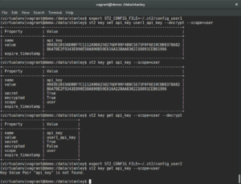
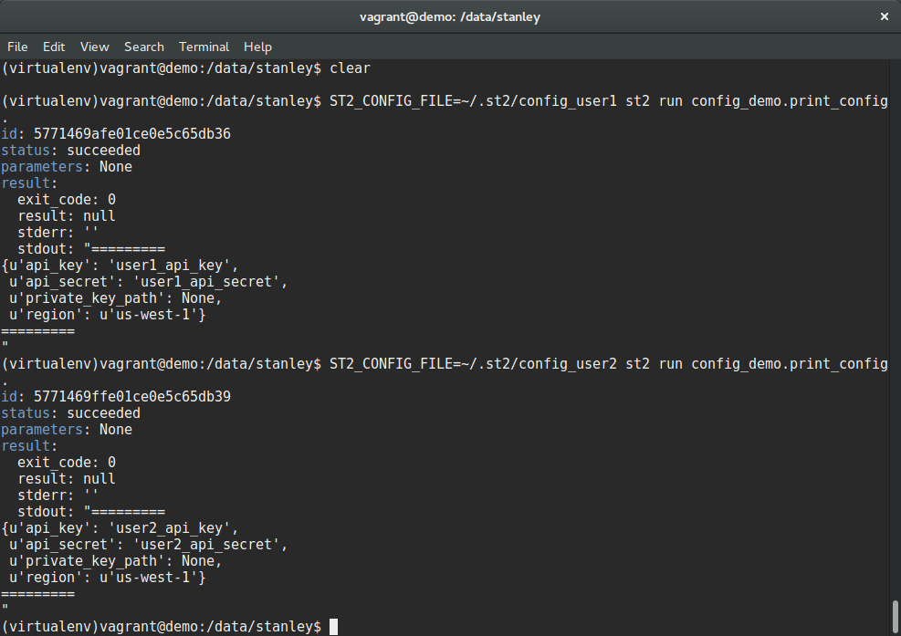

June 30, 2016
By Tomaz Muraus
The last couple of months, since the Brocade acquisition, have been pretty busy for us here at StackStorm. We have been getting to know our new friends at Brocade, learning the typical networking use-cases and figuring out how we can use StackStorm to automate them and bring all the DevOps and data-center automation goodness to the networking space, while keeping StackStorm a generic DevOps automation platform.
As always, we have continued to support our users and the community. We also haven’t been slacking with the StackStorm feature development and improvements. We have worked hard to bring you two new releases in the last 2 months – StackStorm v1.4 and StackStorm v1.5.
StackStorm v1.5 which has been released just recently includes many new features and improvements so if you haven’t already, I would encourage you to go check it out.
Today I will talk about the one of the major new features in StackStorm v1.5 which has been discussed and requested many times in the past already. That is improved pack configuration.
In the previous versions of StackStorm, users would configure packs by editing config.yaml file in the pack directory. This approach works fine for simple use cases, but it breaks down for some of the more advanced ones (e.g. you want to use a different configuration value based on the user who has executed an action, etc.).
An example of a more advanced, but a pretty common use case is having two users with two different set of AWS / OpenStack credentials. You want these two users to create VMs and other resources using their credentials on the same instance of StackStorm. In addition to that, users also want to keep those credentials secret from each other. Before StackStorm v1.5 there was no simple and straight-forward way to achieve that.
In StackStorm v1.5, we solved all of those limitations and made the whole thing simple and straight-forward.
Another annoyance was that this config.yaml file was located inside the pack root directory and as such, was part of the pack. This means config was not separated from the code which made updating packs harder. This would get especially hairy if the config.yaml file template was updated upstream and user wanted to update the local pack – usually this would result in merge conflicts and require manual conflict resolution.
To resolve that and some of the other limitations of the old pack configuration, we have reworked pack configuration. You can learn more about it in the section below.
First thing we did is separated config from the upstream pack code. This means that the content of the pack doesn’t need to be modified by the user anymore. The user can now easily update the pack without worrying that the local config file would be overwritten by the upstream changes or similar.
Pack configuration is now stored inside the new /opt/stackstorm/configs/ directory. The config file name needs to match the pack name. For example, for pack libcloud, config would previously live in /opt/stackstorm/packs/libcloud/config.yaml. The new location now is /opt/stackstorm/configs/libcloud.yaml.
This new config format includes some cool new features such as dynamic configuration values which are described in more details below, but if you don’t utilize those new features, the configuration file format is fully backward compatible. This means that migrating to the new approach is very easy. You simply need to move your existing configuration to the new location as shown in the example below:
| mv /opt/stackstorm/packs/libcloud/config.yaml /opt/stackstorm/configs/libcloud.yaml |
Keep in mind that this is just an example to give you an idea of how easy it is. We are big believers and advocates of Infrastructure as Code approach so in production scenarios, we would encourage all of our users to follow the same infrastructure as code practices as you do for any other code and config files.
In this case this would mean that at the very least you should version control the whole /opt/stackstorm/configs/ directory and follow the same review and other practices as you do for any other code and config files.
In addition to separating config from code, we also introduced some other new features. One of those is dynamic configuration values which allows users to utilize values from the datastore in the config.
To make it easier to understand this new feature, we will first dive into a couple of other features on top of which dynamic configurations values are built.
Previously, all the datastore values were stored in a global scope. This means that no matter which user referenced a datastore value in a template using “{{system.datastore_key}}” notation, they would all get access to the same value.
In many scenarios this is desired (e.g. shared values, configuration, thresholds, etc.), but in some situations allowing users to scope values to themselves makes a lot more sense. One of the commonly requested features was allowing different users to utilize different sets of API credentials. This is important for security (limiting access) and auditing purposes. Many services such as AWS with IAM roles allow administrators to create different set of credentials for different users with limited access.
With this new feature, users can now set a datastore value which is scoped to themselves. This value is then only visible and accessible to the administrators and user who set the value (that assumes you are running enterprise version of StackStorm with RBAC of course).
For more information on this feature please refer to the documentation – Scoping items stored in datastore.
Another feature introduced in StackStorm v1.5 is encrypted datastore values. This has been requested by many of enterprise customers and users.
This features allows users to store encrypted values in the datastore. Values are encrypted using AES256 symmetric encryption. The key file used to encrypt and decrypt values is generated by the StackStorm administrator.
The plaintext version of the encrypted datastore items is only accessible to an administrator and in the case of user-scoped items, also to the user who has set that value.
For more information on limitations and how to utilize this feature, please refer to the documentation – Securing secrets in key value store.

In the example above we put everything together and set a user-scoped datastore item with key api_key and value user1_api_key which is also a secret. Because this value is also a secret, encrypted value (ciphertext) will be output by default, unless decrypted version is requested using –decrypt CLI flag. As mentioned above, the encrypted and plaintext version of this value can only be seen by the administrator and user who set the value.
Now that you have a basic understanding of user-scoped and encrypted datastore items I will explain how to pull everything together, including dynamic config values (values which point to a datastore item).
To utilize datastore item inside the config, you need to use the following Jinja template notation for the config value:
For example:
| --- | |
| api_key: "{{user.api_key}}" | |
| api_secret: "{{user.api_secret}}" | |
| private_key_path: "{{system.shared_key_path}}" | |
| region: "us-west-1" |
In the example above, we utilize all the possible options (api_key and api_secret refer to encrypted user-scoped datastore item, private_key uses system scoped datastore item and region is a simple static value which doesn’t utilize any of the new features).
For this example config to work you also need a configuration file schema. This is an optional file stored in the root of a pack directory and named config.schema.yaml. This file is defined by the pack author and contains types and some other information about possible configuration file items.
This file is optional unless you want to utilize encrypted datastore values. In that case, you will need to declare configuration items as secret in the config schema as shown below (that is required to let StackStorm know that the value is secret and as such needs to be decrypted before use).
| --- | |
| api_key: | |
| description: "API key" | |
| type: "string" | |
| secret: true | |
| required: true | |
| api_secret: | |
| description: "API secret" | |
| type: "string" | |
| secret: true | |
| required: true | |
| regions: | |
| description: "A list of API regions to" | |
| type: "string" | |
| required: true | |
| enum: | |
| - "us-west-1" | |
| - "us-east-1" | |
| default: "us-east-1" | |
| private_key_path: | |
| description: "Path to the private key file to use" | |
| type: "string" | |
| required: false |
As you can see in the example above, we define types for all the config items (and you as a pack author are encouraged to do so), but to provide flexibility and make getting started easier, we don’t perform any validation yet.
In the future, we plan to introduce an optional strict validation mode. In that mode, all the static config value types will be validated against the valid types defined in the config schema. We call this “optional typing” and we believe it provides best of the both worlds – when you need to quickly prototype something and get started you don’t need to do anything, but in production you can enable strict validation mode. With strict validation mode, you will be able to catch a lot of common errors earlier when registering / loading the configs instead of at run time. This provides faster feedback and a better user experience.
Once you have defined the pack config you need to run the st2-register-content –register-configs command. This commands synchronizes config information on the file system with the database. You will need to run it every time you change the config file on disk.
For demonstration purposes, I will use an action which simply prints out the config values. In real life, this action would of course do something with the config values (e.g. authenticate against AWS API or similar) instead of just printing them out.

In the example above we ran the same action with two different StackStorm users (user1 and user2). As you can see in the output, the actual config value printed are different – they resolved to a datastore item which is local to a particular user.
User-scoped datastore items and dynamic config values come especially handy in situations where you want to use different credentials for a particular user, different thresholds and so on.
As mentioned above, existing config files (config.yaml) are fully backward compatible. If you want to separate config from the pack data and / or utilize new features, you simply need to move the existing config to /opt/stackstorm/configs/my_pack.yaml. In addition to that, if you want to utilize encrypted datastore values you also need to make sure that the pack contains a valid and correct config.schema.yaml file. If that’s not the case yet, we encourage you to contribute one – writing a config schema is very simple and you will make StackStorm a better place for everyone.
In addition to that, if both files are found (/opt/stackstorm/packs/my_pack/config.yaml and /opt/stackstorm/configs/my_pack.yaml), configs are merged from left to right and values in the new config have precedence over the old ones.
To make the migration easier, we also plan to support old-style configs for at least a couple of more months. Nevertheless, if you get a chance we would encourage you to migrate to the new and improved approach. This will make your life a lot easier since you will be able to update packs without potential merge conflicts and you will be able to utilize new features.
We hope you are as excited as we are about the improved pack configuration, user-scoped datastore items, datastore secrets and other new features. Over the coming weeks, we will be updating existing packs inside StackStorm Exchange (add config.schema.yaml file, etc.) so you will be able to leverage this new functionality.
In the mean-time, we encourage you to try play with it and try it out. If a particular pack you are interested in hasn’t been updated yet and is missing a config schema, don’t be afraid. It is easy to add one yourself. If you get stuck or don’t know how to proceed, we are here to help.
As always, if you have questions or feedback, you can reach us at one of our community channels.